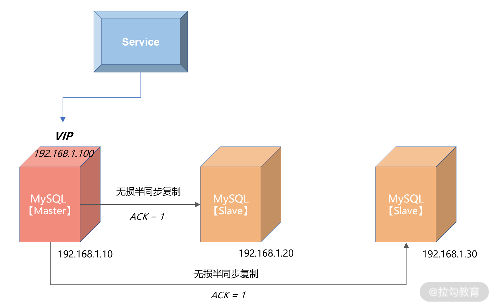
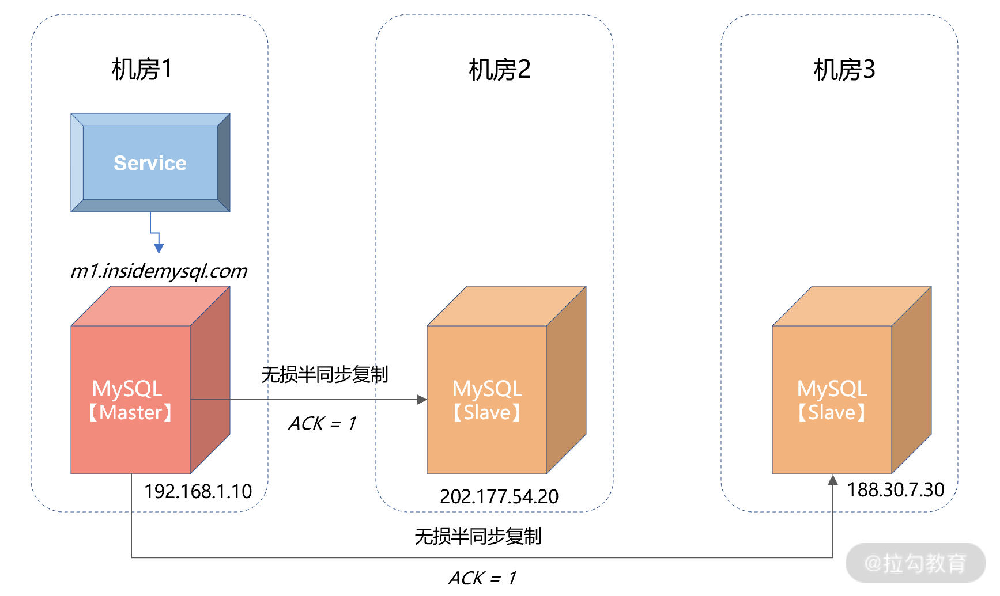
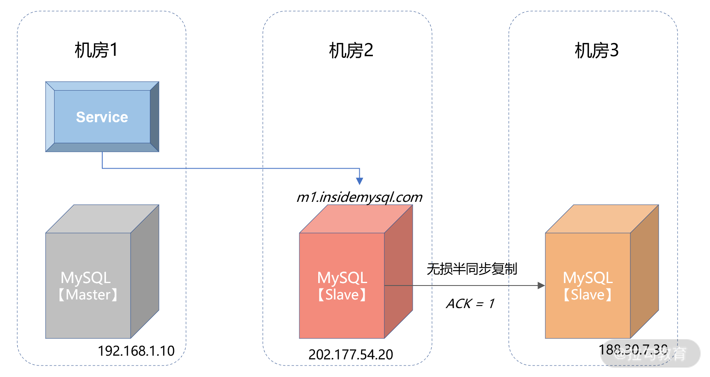
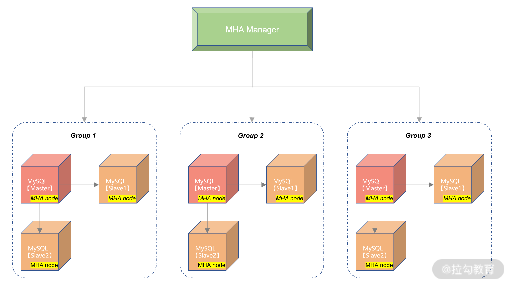

- 00 开篇词 从业务出发，开启海量 MySQL 架构设计.md.html
- 01 数字类型：避免自增踩坑.md.html
- 02 字符串类型：不能忽略的 COLLATION.md.html
- 03 日期类型：TIMESTAMP 可能是巨坑.md.html
- 04 非结构存储：用好 JSON 这张牌.md.html
- 05 表结构设计：忘记范式准则.md.html
- 06 表压缩：不仅仅是空间压缩.md.html
- 07 表的访问设计：你该选择 SQL 还是 NoSQL？.md.html
- 08 索引：排序的艺术.md.html
- 09 索引组织表：万物皆索引.md.html
- 10 组合索引：用好，性能提升 10 倍！.md.html
- 11 索引出错：请理解 CBO 的工作原理.md.html
- 12 JOIN 连接：到底能不能写 JOIN？.md.html
- 13 子查询：放心地使用子查询功能吧！.md.html
- 14 分区表：哪些场景我不建议用分区表？.md.html
- 15 MySQL 复制：最简单也最容易配置出错.md.html
- 16 读写分离设计：复制延迟？其实是你用错了.md.html
- 17 高可用设计：你怎么活用三大架构方案？.md.html
- 18 金融级高可用架构：必不可少的数据核对.md.html
- 19 高可用套件：选择这么多，你该如何选？.md.html
- 20 InnoDB Cluster：改变历史的新产品.md.html
- 21 数据库备份：备份文件也要检查！.md.html
- 22 分布式数据库架构：彻底理解什么叫分布式数据库.md.html
- 23 分布式数据库表结构设计：如何正确地将数据分片？.md.html
- 24 分布式数据库索引设计：二级索引、全局索引的最佳设计实践.md.html
- 25 分布式数据库架构选型：分库分表 or 中间件 ？.md.html
- 26 分布式设计之禅：全链路的条带化设计.md.html
- 27 分布式事务：我们到底要不要使用 2PC？.md.html
- 捐赠
19 高可用套件：选择这么多，你该如何选？
在 17、18 讲中，我们已经学习了 MySQL 数据库的高可用解决方案，并且学习了怎么根据金融业务的要求，通过无损半同步复制的方式进行三园区的同城容灾设计，以及三地务中心的跨城容灾设计。
但是当数据库发生宕机时，MySQL 的主从复制并不会自动地切换，这需要高可用套件对数据库主从进行管理。
这一讲，我们就来学习 MySQL 常用的高可用套件，希望你在学完今天的内容之后，能够理解高可用套件的实现原理，将高可用套件用于自己的生产环境。
高可用套件
MySQL 的高可用套件用于负责数据库的 Failover 操作，也就是当数据库发生宕机时，MySQL 可以剔除原有主机，选出新的主机，然后对外提供服务，保证业务的连续性。
可以看到，MySQL 复制是高可用的技术基础，用于将数据实时同步到从机。高可用套件是MySQL 高可用实现的解决方案，负责切换新主机。
为了不让业务感知到数据库的宕机切换，这里要用到 VIP（Virtual IP）技术。其中，VIP 不是真实的物理 IP，而是可以随意绑定在任何一台服务器上。
业务访问数据库，不是服务器上与网卡绑定的物理 IP，而是这台服务器上的 VIP。当数据库服务器发生宕机时，高可用套件会把 VIP 插拔到新的服务器上。数据库 Failover后，业务依旧访问的还是 VIP，所以使用 VIP 可以做到对业务透明。
下面这张图显示了业务通过 VIP 进行数据库的访问：

从上图可以看到，MySQL 的主服务器的 IP 地址是 192.168.1.10，两个从服务器的 IP 地址分别为 192.168.1.20、192.168.1.30。
上层服务访问数据库并没有直接通过物理 IP 192.168.1.10，而是访问 VIP，地址为192.168.1.100。这时，如果 MySQL 数据库主服务器发生宕机，会进行如下的处理：

我们可以看到，当发生 Failover 后，由于上层服务访问的是 VIP 192.168.1.100，所以切换对服务来说是透明的，只是在切换过程中，服务会收到连接数据库失败的提示。但是通过重试机制，当下层数据库完成切换后，服务就可以继续使用了。所以，上层服务一定要做好错误重试的逻辑，否则就算启用 VIP，也无法实现透明的切换。
但是 VIP 也是有局限性的，仅限于同机房同网段的 IP 设定。如果是我们之前设计的三园区同城跨机房容灾架构，VIP 就不可用了。这时就要用名字服务，常见的名字服务就是 DNS（Domain Name Service），如下所示：

从上图可以看到，这里将域名 m1.insidemysql.com 对应的 IP 指向为了 192.168.1.10，上层业务通过域名进行访问。当发生宕机，进行机房级切换后，结果变为：

可以看到，当发生 Failover 后，高可用套件会把域名指向为新的 MySQL 主服务器，IP 地址为202.177.54.20，这样也实现了对于上层服务的透明性。
虽然使用域名或其他名字服务可以解决跨机房的切换问题，但是引入了新的组件。新组件的高可用的问题也需要特别注意。在架构设计时，请咨询公司提供名字服务的小组，和他们一起设计高可用的容灾架构。
了解了上述的高可用透明切换机制，我们继续看一下业界 MySQL 常见的几款高可用套件。
MHA
MHA(Master High Availability)是一款开源的 MySQL 高可用程序，它为 MySQL 数据库主从复制架构提供了 automating master failover 的功能。
MHA 是由业界大名鼎鼎的 Facebook 工程师 Yoshinorim 开发，开源地址为：https://github.com/yoshinorim/mha4mysql-manager它由两大组件所组成，MHA Manger 和 MHA Node。
MHA Manager 通常部署在一台服务器上，用来判断多个 MySQL 高可用组是否可用。当发现有主服务器发生宕机，就发起 failover 操作。MHA Manger 可以看作是 failover 的总控服务器。
而 MHA Node 部署在每台 MySQL 服务器上，MHA Manager 通过执行 Node 节点的脚本完成failover 切换操作。
MHA Manager 和 MHA Node 的通信是采用 ssh 的方式，也就是需要在生产环境中打通 MHA Manager 到所有 MySQL 节点的 ssh 策略，那么这里就存在潜在的安全风险。
另外，ssh 通信，效率也不是特别高。所以，MHA 比较适合用于规模不是特别大的公司，所有MySQL 数据库的服务器数量不超过 20 台。
!
Orchestrator
Orchestrator 是另一款开源的 MySQL 高可用套件，除了支持 failover 的切换，还可通过Orchestrator 完成 MySQL 数据库的一些简单的复制管理操作。Orchestrator 的开源地址为：https://github.com/openark/orchestrator
你可以把 Orchestrator 当成 MHA 的升级版，而且提供了 HTTP 接口来进行相关数据库的操作，比起 MHA 需要每次登录 MHA Manager 服务器来说，方便很多。
下图显示了 Orchestrator 的高可用设计架构：

其基本实现原理与 MHA 是一样的，只是把元数据信息存储在了元数据库中，并且提供了HTTP 接口和命令的访问方式，使用上更为友好。
但是由于管控节点到下面的 MySQL 数据库的管理依然是 ssh 的方式，依然存在 MHA 一样的短板问题，总的来说，关于 Orchestrator 我想提醒你，依然只建议使用在较小规模的数据库集群。
数据库管理平台
当然了，虽然 MHA 和 Orchestrator 都可以完成 MySQL 高可用的 failover 操作，但是，在生产环境中如果需要管理成千乃至上万的数据库服务器，由于它们的通信仅采用 ssh 的方式，并不能满足生产上的安全性和性能的要求。
所以，几乎每家互联网公司都会自研一个数据库的管理平台，用于管理公司所有的数据库集群，以及数据库的容灾切换工作。
接下来，我想带你详细了解数据库管理平台的架构。下图显示了数据库管理平台大致的实现框架：

上图中的数据库管理平台是用户操作数据库的入口。对数据库的大部分操作，比如数据库的初始化、数据查询、数据备份等操作、后续都能在这个平台完成，不用登录数据库服务器，这样的好处是能大大提升数据库操作的效率。
数据库管理平台提供了 HTTP API 的方式，可用前后端分离的方式支持 Web、手机等多种访问方式。
元数据库用于存储管理 MySQL 数据库所有的节点信息，比如 IP 地址、端口、域名等。
数据库管理平台 Manager 用来实际控制下面的所有 MySQL 节点，Manager 和后端 MySQL 的通信通过 MySQL 服务器上部署的 agent 方式进行。两者通过 BP 协议以 grpc 的方式通信。这样解决了 ssh 的不安全性以及性能。
其中，agent 用来上报数据库各节点的状态给 Manager，管理节点 Manager 通过上报的信息判断数据库是否宕机，是否需要进行切换，切换到哪个节点。
上图的设计，能完成一个比较基本的数据库管理平台。另外，每个公司有自己的一些需求，也可以做到数据库管理平台中，比如安全要求、审计需求、工单系统等。
所以，有了数据库管理平台，数据库的高可用切换、数据库日常管理和访问，都可以由平台自动完成。有了数据库管理平台，才能真正实现数据库管理的无人驾驶。
总结
这一讲我们主要学习了 MySQL 数据库的高可用套件，我们知道 MySQL 复制是高可用实现的技术基础，但是需要高可用套件才能完成 Failover 的操作。MySQL 复制技术本身不能实现failover 的功能。
为了实现数据切换的透明性，可以采用 VIP 和名字服务机制。VIP 仅用于同机房同网段，名字服务器，比如域名可以跨机房进行切换。
MySQL 常用的高可用套件有 MHA 和 Orchestrator，它们都能完成 failover 的工作。但是由于管理节点与 MySQL 通信采用 ssh 协议，所以安全性不高，性能也很一般，一般建议用在不超过 20 台数据库节点的环境中。
对于要管理 MySQL 数量比较多的场景，推荐自研数据库平台，这样能结合每家公司的不同特性，设计出 MySQL 数据库的自动管理平台，这样才能解放 DBA 的生产力，投入业务的优化工作中去。
© 2019 - 2023 Liangliang Lee. Powered by gin and hexo-theme-book.